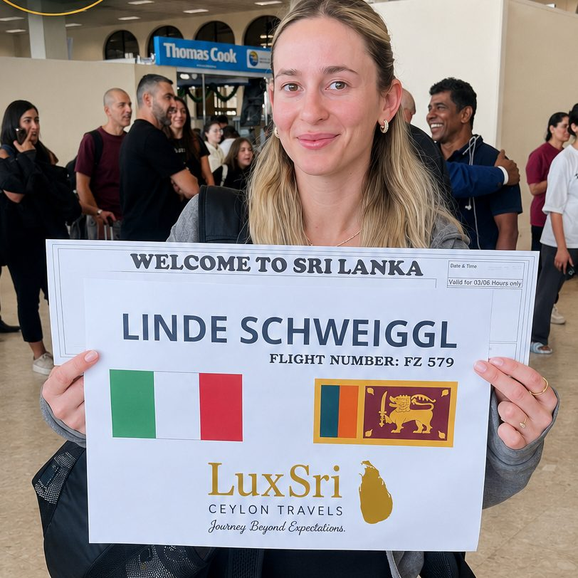

- Day 1Airport → Anuradhapura
- Arrival and time to relax
- Day 2Anuradhapura ancient city
- With a local site guide (UNESCO World Heritage)
- Jaya Sri Maha Bodhi
- Ruwanweli Maha Seya
- Isurumuniya Temple
- Kuttam Pokuna (the twin ponds)
- Abhayagiri Stupa
- Samadhi Buddha statue
- Day 3Anuradhapura → Polonnaruwa → Sigiriya
- Polonnaruwa with a local site guide (UNESCO World Heritage)
- Archaeological Museum
- Potgul Vehera
- Royal Palace
- Polonnaruwa Vatadage
- Shiva Devale
- Rankoth Vehera
- Manik Vehera
- Kiri Vehera
- Lankatilaka Image House
- Gal Vihara
- Day 4Sigiriya
- Sigiriya Lion Rock (UNESCO World Heritage)
- Pidurangala Rock
- Sri Lankan Ayurveda wellness treatment
- Minneriya elephant safari
- Day 5Sigiriya → Kandy
- Dambulla Dedicated Economic Centre (the island's biggest fruit and vegetable market)
- Dambulla Cave Temple (UNESCO World Heritage)
- Ranweli Spice Garden
- Kandyan cultural dance show at the Kandy Lake Club
- Day 6Kandy → Colombo
- Temple of the Sacred Tooth Relic (UNESCO World Heritage)
- Natural gems and gemmological museum
- Kandy Lake
- Royal Botanical Gardens, Peradeniya
- Day 7Colombo → Airport
- Independence Square
- Colombo National Museum
- Gangaramaya Temple
- Cricket museum
- Red Mosque (Jami Ul-Alfar)
- Transfer to the airport
Sri Lanka Tour Packages
Tailor-made Sri Lanka tours with a private driver
Journey Beyond Expectations.
Every tour is planned around you. These sample itineraries show the most popular routes, and each one can be shortened, extended or combined. All trips include a private English-speaking chauffeur guide, an air-conditioned vehicle and airport pickup and drop-off.
- Day 1Airport → Negombo
- Arrival and time to relax
- Day 2Negombo → Sigiriya
- Morning visit to the fish market
- Negombo lagoon boat tour
- Hiriwadunna village tour
- Day 3Sigiriya
- Sigiriya Lion Rock (UNESCO World Heritage)
- Pidurangala Rock
- Sri Lankan Ayurveda wellness treatment
- Minneriya elephant safari
- Day 4Sigiriya → Kandy
- Dambulla Dedicated Economic Centre
- Dambulla Cave Temple (UNESCO World Heritage)
- Ranweli Spice Garden
- Kandyan cultural dance show at the Kandy Lake Club
- Day 5Kandy
- Temple of the Sacred Tooth Relic (UNESCO World Heritage)
- Udawattakele Forest Reserve
- Kandy Market Hall
- Natural gems and gemmological museum
- Kandy War Cemetery
- Royal Botanical Gardens, Peradeniya
- Kandy viewpoint
- Kandy Lake
- Day 6Kandy → Nuwara Eliya → Ella
- Tea factory and tea plantation
- Ramboda Falls
- Nuwara Eliya town
- Gregory Lake
- Nanu Oya railway station
- Day 7Ella → Mirissa
- Little Adam's Peak viewpoint
- Nine Arches Bridge
- Ravana Falls
- Evening on Mirissa beach
- Day 8Mirissa → Airport
- Whale watching in Mirissa
- Time to relax
- Transfer to the airport
- Day 1Airport → Negombo
- Negombo fish market
- Day 2Negombo → Mirissa via Galle
- Mangrove boat safari
- Turtle hatchery
- Galle Fort (UNESCO World Heritage)
- Day 3Mirissa
- Thalpe rope swing
- Water sports
- Whale watching
- Sunset at Coconut Tree Hill
- Day 4Mirissa
- A relaxed beach day at Hiriketiya
- Day 5Mirissa → Yala
- Leopard trail safari in Yala National Park
- Day 6Yala → Ella
- Little Adam's Peak viewpoint
- Ravana Falls
- Authentic Sri Lankan cooking lesson
- Day 7Ella → Nuwara Eliya → Kandy
- Nine Arches Bridge and the scenic train from Ella to Nanu Oya
- Nuwara Eliya town
- Gregory Lake
- Tea factory and tea plantation
- Ramboda Falls
- Day 8Kandy → Sigiriya
- Temple of the Sacred Tooth Relic (UNESCO World Heritage)
- Dambulla Cave Temple (UNESCO World Heritage)
- Day 9Sigiriya
- Sigiriya Lion Rock (UNESCO World Heritage)
- Sri Lankan Ayurveda wellness treatment
- Minneriya elephant safari
- Day 10Sigiriya → Airport
- Time to relax
- Transfer to the airport
- Day 1Airport → Bentota
- Arrival and time to relax
- Day 2Bentota → Mirissa
- Mangrove boat tour
- Turtle hatchery
- Galle Fort (UNESCO World Heritage)
- Day 3Mirissa
- Whale watching
- Crocodile watching
- Day 4Mirissa and Hiriketiya
- Beach time at Hiriketiya
- Surfing
- Sunset at Coconut Tree Hill
- Day 5Mirissa → Yala
- Safari in Yala National Park
- Day 6Yala
- Elephant safari in Udawalawe National Park
- Udawalawe Elephant Transit Home (orphaned elephants)
- Day 7Yala → Ella
- Ravana Falls
- Ravana Cave
- Day 8Ella → Nuwara Eliya
- Little Adam's Peak
- Scenic train from Ella to Nanu Oya
- Gregory Lake
- Around Nuwara Eliya
- Day 9Nuwara Eliya
- Lover's Leap
- Tea factory tour
- A walk on the Pekoe Trail
- Day 10Nuwara Eliya → Colombo
- Horton Plains National Park
- Day 11Colombo → Airport
- Time to relax
- Transfer to the airport
Every journey, planned around you.
Choose the places you love and the pace you like. Mahesh plans the route day by day with you, and it can change along the way. Popular stops include:
- Anuradhapura
- Polonnaruwa
- Sigiriya
- Dambulla
- Kandy
- Nuwara Eliya
- Ella
- Yala or Kumana safari
- Udawalawe
- South coast beaches
- Galle Fort
- Colombo
Shorter trips
Day trips and airport transfers
Day tours from Colombo, Negombo, Kandy and Galle, plus private transfers from Colombo Bandaranaike International Airport (CMB) to anywhere in Sri Lanka.

Free itinerary and quote
Plan your Sri Lanka tour
Tell us a little about your trip and send the form. Mahesh replies personally by email with a free plan and quote.
- WhatsApp or call+94 77 522 8576
- Emailluxsriceylontravels@gmail.com
- Instagram@luxsri_ceylon_travels
- TikTok@maheshthilakasiri